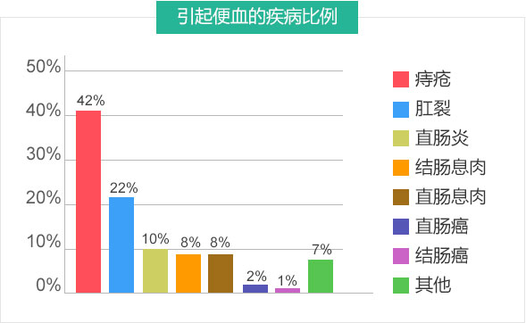
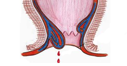
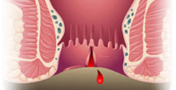
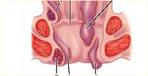
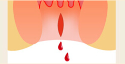
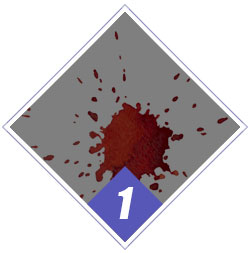
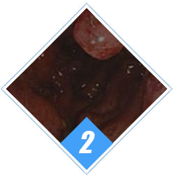
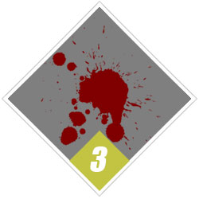
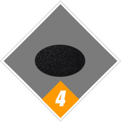

8大病因 揭示便血背后疾病
Eight causes Behind the bloody diseases如果您还认为便血是小问题
那您就要注意了
结论：由痔疮引起的便血概率较大，当然也不排除患有直肠癌的可能,不妨说说您的情况。
5期症状 细看便血周期
5) symptoms Look bloody cycle-
便血一周
便血初期，一周内便血偶尔出现一次
-
便血一个月
便血早期，症状出现过多次，肛门会引发炎症
-
便血半年
便血中期，持续便血两三天,伴有便秘、肛周红肿、疼痛
-
便血一年
便血中晚期，便血次数明显增多，易出现缺铁性贫血、引发妇科炎症
4种类型 帮您鉴别便血程度
Four types Help you identify the bloody degree-

鲜血便
鲜血便是便血的一种常见症状，常见于内痔、外痔、混合痔、肛裂等肛肠疾病。 -

脓血便
脓血便是肠道有器质性病变，必须十分重视，及时明确诊断，抓紧治疗 -

柏油便（黑便）
良性疾患，包括内痔、外痔，肛裂，大肠息肉，肛瘘等。 -

鲜血便
上消化道或小肠出血并在肠内停留时间较长，红细胞破坏后。
肛肠医师指出：众多疾病都有便血症状，有便血者切忌不知病因盲目用药，更忌拖延不治。
>>无法辨别便血程度 点击咨询宏康治便血 检查准确 对症下药
Macro koji bloody check accurate suit the remedy to the case到院需要通过电子肛门镜检查就
可以快速为您确诊！
准确图像采集
用时3-5分钟，实时诊断
疼痛低 可视化彩色报告
宏康微创疗法 轻松除便血
Safe and painless hematochezia便血病因不同 治疗方法不同
安全、微创、治疗范围广、不反复
- PPH美国强生微创术
- HCPT微创术
- RPH套扎器
PPH美国强生微创术
PPH微创术是建立在肛垫学说基础上的利用特制的圆形吻合器经肛门插入直肠，环形切除直肠下端肠壁的黏膜和黏膜下层组织……[详情]
微创疗法 四大优势
Minimally invasive treatment Four big advantage
-
手术成功率
较高 -
手术时间短
平均为
15min -
轻微疼痛
创伤小 -
基本无并发症
一般一次治愈
便血 的预防和保健
Bloody prevention and health care-
忌烟酒、刺激之物
烟酒或刺激食品可加重肠粘膜充血水肿 使便血症状加重。
-
起居调整
便血量大者要卧床休息，吃流动或少渣饮食，必要时应禁食以减少对消化道刺激。
-
忌用活血药
便血患者在治疗过程中避免使用活血化淤药以免渣成出血不止的现象